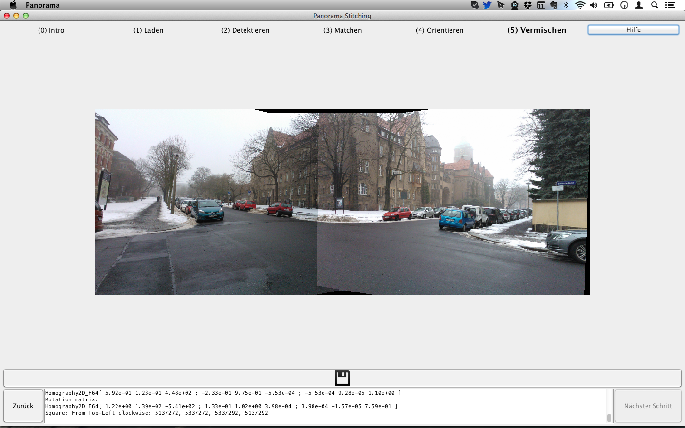

Im vorangehenden Schritt wurden die relativ orientierten Bilder auf einem schwarzen Hintergrund übereinander gelegt. Für ein Panorama ist das noch nicht ausreichend. Der schwarze Hintergrund muss entfernt und die harten Übergänge zwischen den einzelnen Bildern abgemildert (überblendet) werden. Ersteres wird in dieser Software mit einem Algorithmus gemacht, der ein kleines Rechteck in der Mitte des Bildes platziert und kontinuierlich in alle Richtung wachsen lässt, solange mindestens 95 % der Pixel im neu zu akquirierenden Bereich schwarz sind. Die Übergänge zwischen den Bildern weicher zu gestalten hätte den Rahmen des Komplexpraktikums gesprengt und war leider zeitlich nicht möglich.
Mit einem Klick auf den Button mit der Diskette kann das Panorama abgespeichert werden.
